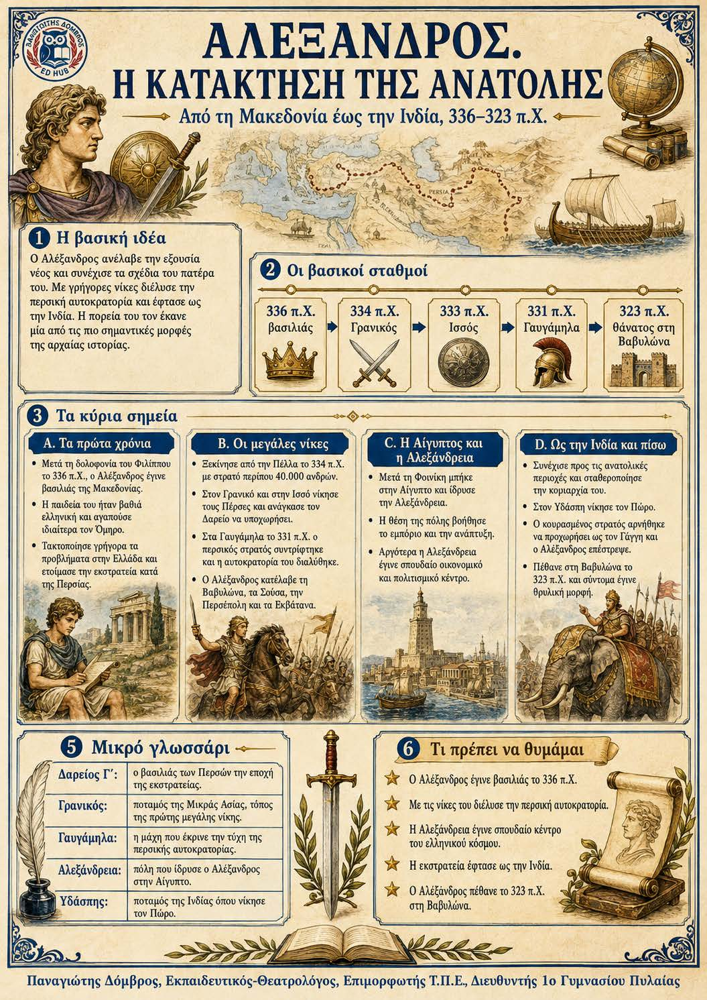

Πληροφοριογράφημα ενότητας
Το πληροφοριογράφημα αυτής της ενότητας δεν έχει ανέβει ακόμη. Οι σημειώσεις παραμένουν πλήρως διαθέσιμες.

Από τη Μακεδονία έως την Ινδία, 336-323 π.Χ.
Ο Αλέξανδρος ανέλαβε τον θρόνο σε ηλικία είκοσι ετών και συνέχισε το σχέδιο του πατέρα του. Με γρήγορες εκστρατείες νίκησε τον περσικό στρατό, κατέλαβε την Αίγυπτο και τις μεγάλες πόλεις της Περσίας και έφτασε ως την Ινδία. Η πορεία του σταμάτησε όταν οι εξαντλημένοι στρατιώτες αρνήθηκαν να προχωρήσουν.
